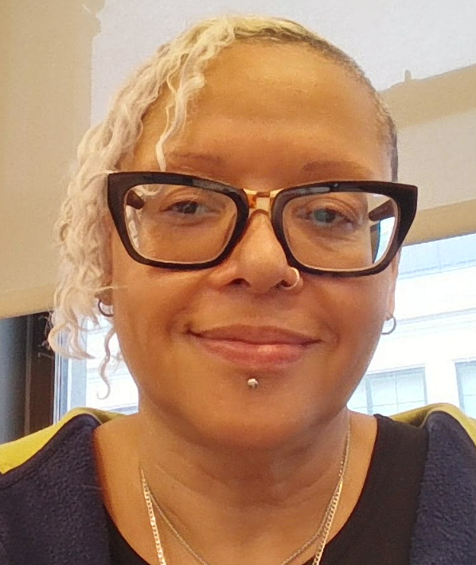

Christina Ruiz
I am an IT Support professional with 8+ years of experience supporting end users, resolving complex hardware/software issues, and keeping teams productive in fast-paced environments.
My background includes supporting users and managing technology systems for the New York City Department of Education and Fordham University School of Law, where I resolved complex issues in academic environments and maintained high service standards.
I am currently part of the December 2025 cohort of the AI Native Program with Pursuit (completing June 2026). I plan to sit for my CompTIA A+ certification by April 2026. I also hold an Associates Degree in Computer Information Systems from NYC College of Technology and a Google IT Support Certificate.
My hospitality experience strengthened my communication, empathy, and problem-solving—qualities I bring to every support interaction. I am passionate about making technology accessible and am seeking an AI-focused role where I can grow long-term and contribute to a forward-thinking organization.